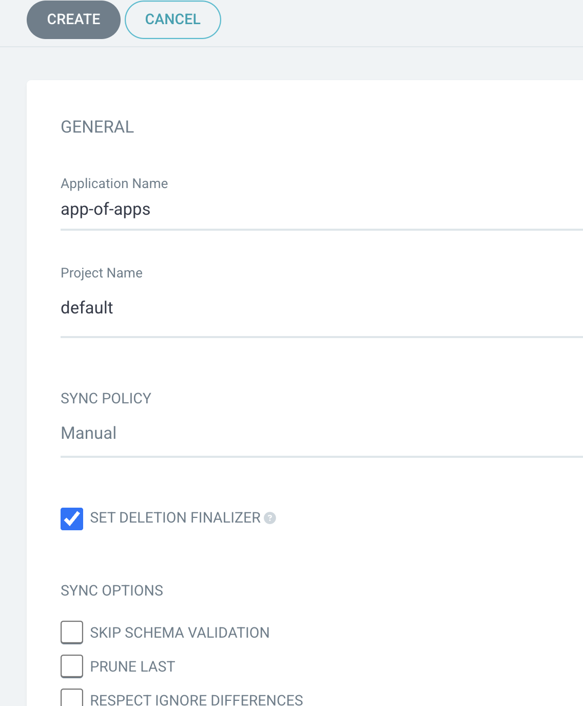
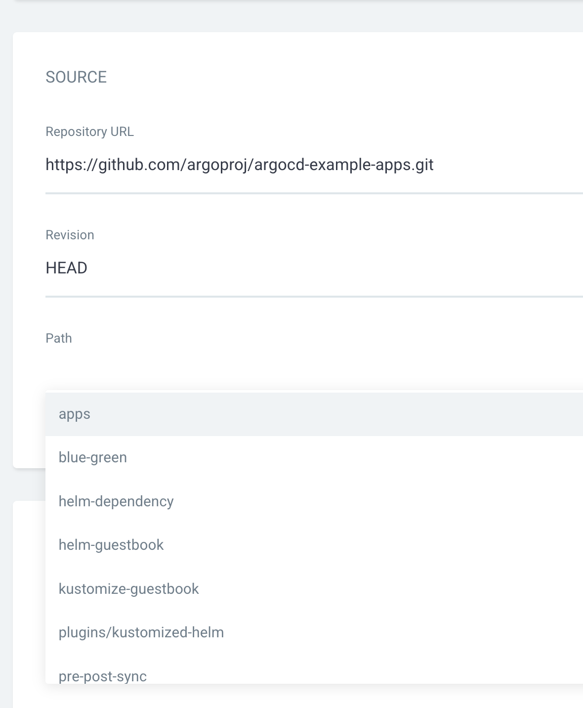
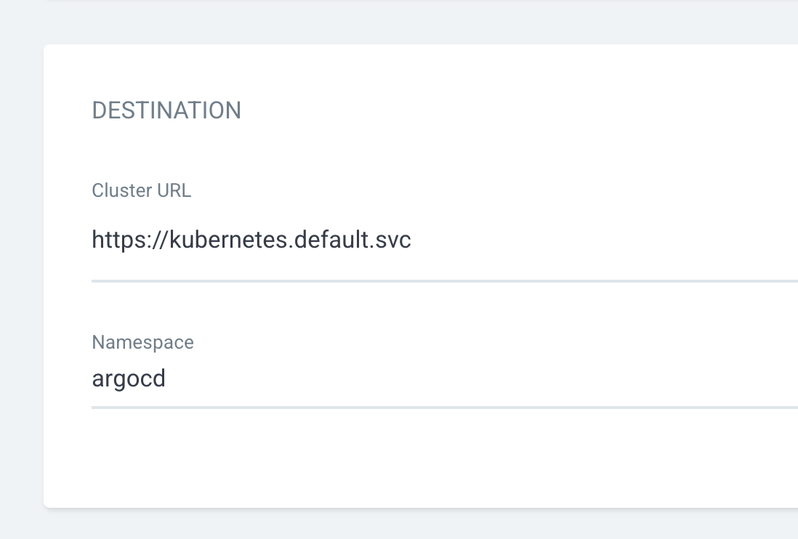
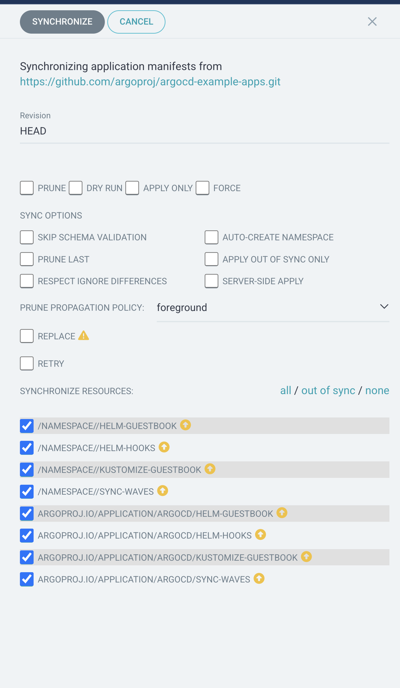
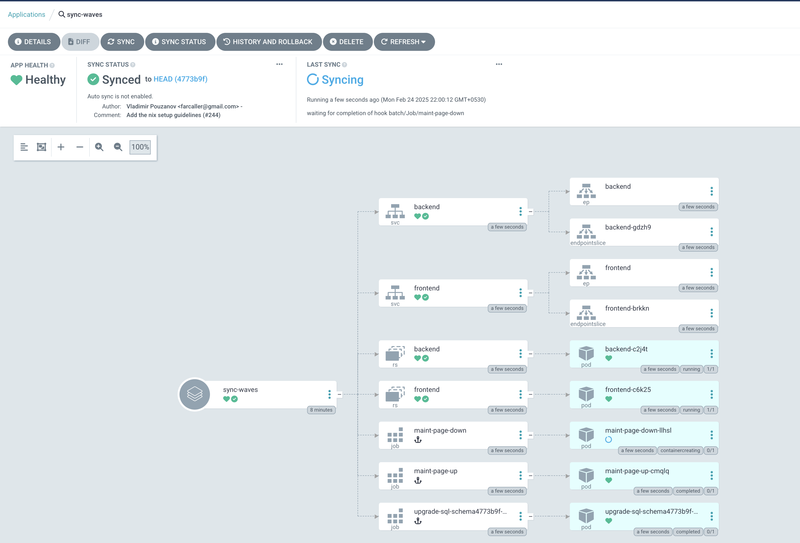

Testing Advanced Sync Strategies
Start by reading the articles on
- Advanced Sync Strategies: ArgoCD Advanced Sync Strategies - Kubernetes Tutorial with CKA/CKAD Prep
- ArgoCD Sync Policies and Options: ArgoCD Sync Options - Kubernetes Tutorial with CKA/CKAD Prep
To test the sync waves, lets setup the example app repository using app of apps pattern.
App of Apps Deployment
Start by examining the example apps repo at (argoproj/argocd-example-apps: Example Apps to Demonstrate Argo CD)
Create a new App of Apps with ArgoCD
General Section
- Application Name :
app-of-apps - Project :
default - Sync Policy :
manual - Set Delete Finalizer :
checked
Source Section:
- Repository URL : https://github.com/argoproj/argocd-example-apps.git
- Revision:
HEAD - Path:
apps
Destination Section:
- Cluster URL : https://kubernetes.default.svc (default from dropdown)
- Namespace :
argocd
Create the app and then manually SYNC it. When

Once you sync it, you shall see it creates a group of apps. This is the app of apps pattern. All these apps are added to argocd namespace.
You could validate it from CLI as,
kubectl get apps -n argocd
[Expected Output]
NAME SYNC STATUS HEALTH STATUS
app-of-apps Synced Healthy
helm-guestbook OutOfSync Missing
helm-hooks OutOfSync Missing
kustomize-guestbook OutOfSync Missing
sync-waves OutOfSync Missing
kubectl get namespace
[Expected Output]
NAME STATUS AGE
helm-guestbook Active 62s
helm-hooks Active 62s
kube-system Active 34h
kustomize-guestbook Active 62s
sync-waves Active 62s
These are the namespaces created by this app of app deployment. In addition you would see your existing namespaces too.
Using Argo Hooks to create Waves
Examine the sync wave manifest here : argocd-example-apps/sync-waves at master · argoproj/argocd-example-apps
Sample code snippets which define the * PreSync Hook * Sync Hook * sync-wave : 0/1/2/3
---
apiVersion: batch/v1
kind: Job
metadata:
generateName: upgrade-sql-schema
annotations:
argocd.argoproj.io/hook: PreSync
apiVersion: batch/v1
kind: Job
metadata:
name: maint-page-up
annotations:
argocd.argoproj.io/hook: Sync
argocd.argoproj.io/hook-delete-policy: BeforeHookCreation
argocd.argoproj.io/sync-wave: "1"
apiVersion: apps/v1
kind: ReplicaSet
metadata:
name: frontend
annotations:
argocd.argoproj.io/sync-wave: "2"
apiVersion: batch/v1
kind: Job
metadata:
name: maint-page-down
annotations:
argocd.argoproj.io/hook: Sync
argocd.argoproj.io/hook-delete-policy: BeforeHookCreation
argocd.argoproj.io/sync-wave: "3"
start watching for pods in sync-waves namespace
watch kubectl get pods -n sync-waves
Select sync wave app from ArgoCD and sync it manually.
You will see it syncing in a certain sequence based on the config in the manifest. 
You could also observe on the CLI which shows you as the resources are creates/synced
Every 2.0s: kubectl get pods -n sync-waves dkr-01: Mon Feb 24 16:34:00 2025
NAME READY STATUS RESTARTS AGE
pod/backend-c2j4t 1/1 Running 0 4m4s
pod/frontend-c6k25 1/1 Running 0 3m53s
pod/maint-page-down-llhsl 0/1 Completed 0 3m49s
pod/maint-page-up-cmqlq 0/1 Completed 0 4m
pod/upgrade-sql-schema4773b9f-presync-1740414585-4jzdn 0/1 Completed 0 4m15s
Using Helm Hooks to create Waves
Examine the helm hooks argocd-example-apps/helm-hooks at master · argoproj/argocd-example-apps
Sample code with * helm hooks * pre and post install hooks * hook weights
apiVersion: batch/v1
kind: Job
metadata:
generateName: upgrade-sql-schema
annotations:
helm.sh/hook: pre-install
helm.sh/hook-weight: "-2"
---
apiVersion: batch/v1
kind: Job
metadata:
name: maint-page-up
annotations:
helm.sh/hook: pre-install
helm.sh/hook-delete-policy: before-hook-creation
helm.sh/hook-weight: "-1"
---
apiVersion: v1
kind: Service
metadata:
name: frontend
annotations:
helm.sh/hook-weight: "2"
---
apiVersion: batch/v1
kind: Job
metadata:
name: maint-page-down
annotations:
helm.sh/hook: post-install
helm.sh/hook-delete-policy: before-hook-creation
Sync the helm-hooks app to examine how it woks. You will notrice that it helps you achieve the same result as with the sync-waves with argo.
Once you are done experimenting with these examples, clean up everything by removing the app-of-apps application that you created with ArgoCD, which will also clean up the child apps and all the resources created by it.